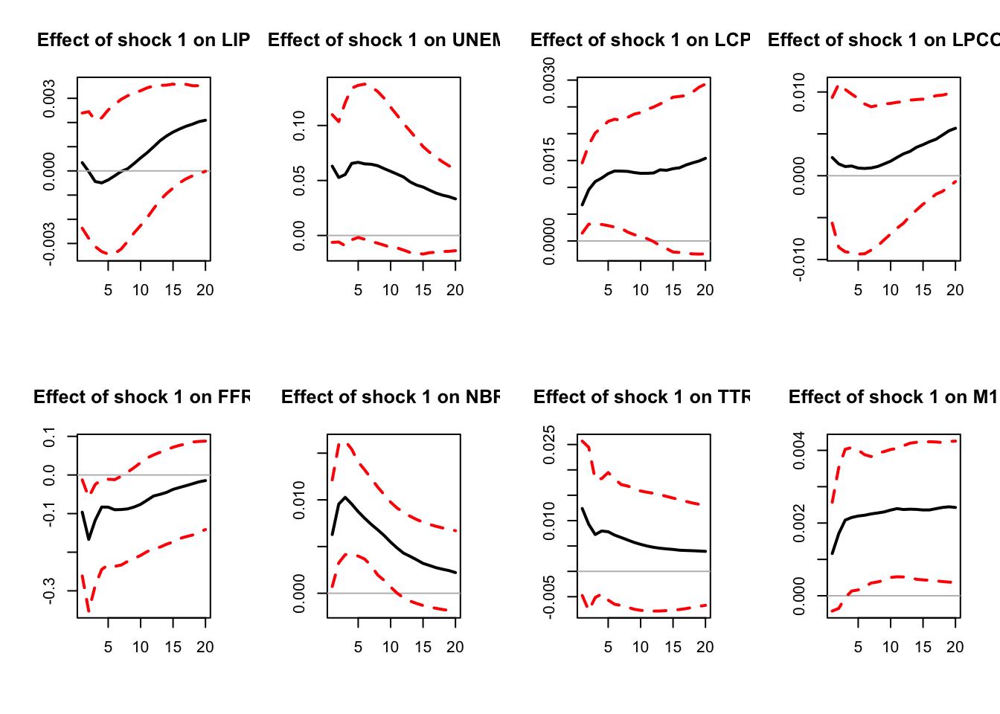

Chapter 4 Sign restrictions
To identifiy the structural shocks, we need to find a matrix \(B\) that satisfies \(\Omega = BB'\) (with \(\Omega = \mathbb{V}ar(\varepsilon_t)\)) and other restrictions. Indeed, as explained above, \(\Omega = BB'\) is not sufficient to identify \(B\) since, if we take any orthogonal matrix \(Q\) (see Def. 4.1), then \(\mathcal{P}=BQ\) also satisfies \(\Omega = \mathcal{P}\mathcal{P}'\).
Definition 4.1 (Orthogonal matrix) An orthogonal matrix \(Q\) is a matrix such that \(QQ' = I,\) i.e., all columns (rows) of \(Q\) are are orthogonal and unit vectors: \[q_i'q_j=0\text{ if }i\neq j\text{ and }q_i'q_j=1\text{ if }i= j,\] where \(q_i\) is the \(i^{th}\) column of \(Q\).
4.1 The approach
The idea behind the sign-restriction approach is to “draw” random matrices \(\mathcal{P}\) that satisfy \(\Omega = \mathcal{P}\mathcal{P}'\), and then to constitute a set of admissible matrices, keeping in this set only the simulated \(\mathcal{P}\) matrices that satisfy some predefined sign-based restriction. An example of restriction is “after one year, a contractionary monetary-policy shocks has a negative impact on inflation”.
As suggested above, if \(B\) is any matrix that satisfies \(\Omega = BB'\) (for instance, \(B\) can be based on the Cholesky decomposition of \(\Omega\)), then we also have \(\Omega = \mathcal{P}\mathcal{P}'\) as soon as \(\mathcal{P}=BQ\), where \(Q\) is an orthogonal matrix. Therefore, to draw \(\mathcal{P}\) matrices, it suffices to draw in the set of orthogonal matrices.
To fix ideas, consider dimension 2. In that case, the orthogonal matrices are rotation matrices, and the set of orthogonal matrices can be parameterized by the angle \(x\), with: \[ Q_x=\begin{pmatrix}\cos(x)&\cos\left(x+\frac{\pi}{2}\right)\\ \sin(x)&\sin\left(x+\frac{\pi}{2}\right)\end{pmatrix}=\begin{pmatrix}\cos(x)&-\sin(x)\\ \sin(x)&\cos(x)\end{pmatrix}. \] (This is an angle-\(x\) counter-clockwise rotation.) Hence, in that case, by drawing \(x\) randomly from \([0,2\pi]\), we draw randomly from the set of \(2\times2\) rotation matrices. For high-dimensional VAR, we lose this simple geometrical representation, though. It is not always possible to parametrize a rotation matrix (high-dimensional VARs).
How to proceed, then? Arias, Rubio-Ramírez, and Waggoner (2018) provide a procedure. Their approach is based on the so-called \(QR\) decomposition: any square matrix \(X\) may be decomposed as \(X=QR\) where \(Q\) is an orthogonal matrix and \(R\) is an upper diagonal matrix. With this in mind, they propose a two-step approach:
- Draw a random matrix \(X\) by drawing each element from independent standard normal distribution.
- Let \(X = QR\) be the \(QR\) decomposition of \(X\) with the diagonal of \(R\) normalized to be positive. The random matrix \(Q\) is orthogonal and is a draw from the uniform distribution over the set of orthogonal matrices.
Equipped with this procedure, the sign-restriction is based on the following algorithm:
- Draw a random orthogonal matrix \(Q\) (using step i. and ii. described above).
- Compute \(B = PQ\) where \(P\) is the Cholesky decomposition of the reduced form residuals \(\Omega_{\varepsilon}\).
- Compute the impulse response associated with \(B\) \(y_{t,t+k}=\Phi^kB\) or the cumulated response \(\bar y_{t,t+k}=\sum_{j=0}^{k}\Phi^jB\).
- Are the sign restrictions satisfied?
- Yes. Store the impulse response in the set of admissible response.
- No. Discard the impulse response.
- Perform \(N\) replications and report the median impulse response (and its “confidence” intervals).
Note: to take into account the uncertainty in \(B\) and \(\Phi\), you can draw \(B\) and \(\Phi\) in Steps 2 and 3 using an inference method (see Section 3).
The sign-restriction approach method has the advantage of being relatively agnostic. Moreover, it is fairly flexible, as one can impose sign restrictions on any variable, at any horizon.
4.2 An example
A prominent example is Uhlig (2005). Using US monthly data from 1965.I to 2003.XII, he employs sign restrictions to estimate the effect of monetary policy shocks.
According to conventional wisdom, monetary contractions should:8
- Raise the federal funds rate,
- Lower prices,
- Decrease non-borrowed reserves,
- Reduce real output.
The restrictions considered by Uhlig (2005) are as follows: an expansionary monetary policy shock leads to:
- Increases in prices
- Increase in nonborrowed reserves
- Decreases in the federal funds rate
What about output? Since is the response of interest, we leave it un-restricted.
library(IdSS);library(vars);library(Matrix)
data("USmonthly")
First.date <- "1965-01-01"
Last.date <- "1995-06-01"
indic.first <- which(USmonthly$DATES==First.date)
indic.last <- which(USmonthly$DATES==Last.date)
USmonthly <- USmonthly[indic.first:indic.last,]
considered.variables<-c("LIP","UNEMP","LCPI","LPCOM","FFR","NBR","TTR","M1")
n <- length(considered.variables)
y <- as.matrix(USmonthly[considered.variables])
sign.restrictions <- list()
horizon <- list()
#Define sign restrictions and horizon for restrictions
for(i in 1:n){
sign.restrictions[[i]] <- matrix(0,n,n)
horizon[[i]] <- 1
}
# Sign restrictions on shock 1 (monetary shock)
sign.restrictions[[1]][1,3] <- 1 # positive impact on price level
sign.restrictions[[1]][2,5] <- -1 # negative impact on interest rate
sign.restrictions[[1]][3,6] <- 1 # positive impact on non-borrowed reserves
horizon[[1]] <- 1:5 # from horizon 1 to 5
res.svar.signs <-
svar.signs(y,p=3,
nb.shocks = 1, #number of identified shocks
nb.periods.IRF = 20,
bootstrap.replications = 1, # = 1 if no bootstrap, = N if bootstrap
confidence.interval = 0.90, # expressed in pp.
indic.plot = 1, # Plots are displayed if = 1.
nb.draws = 10000, # number of draws
sign.restrictions,
horizon,
recursive =1 # =0 <- draw Q directly, =1 <- draw q recursively
)
Figure 4.1: IRF associated with a monetary policy shock; sign-restriction approach.
# Output
IRFs.signs <- res.svar.signs$IRFs.signs # all the simulated IRFs
nb.rotations <- res.svar.signs$xx # total number of rotations
all.CI.median <- res.svar.signs$all.CI.median # median IRFs for the selected shocks
all.CI.lower.bounds <- res.svar.signs$all.CI.lower.bounds # lower-bound IRFs for the selected shocks
all.CI.upper.bounds <- res.svar.signs$all.CI.upper.bounds # upper-bound IRFs for the selected shocksIt has to be stressed that the sign restriction approach does not lead to a unique IRF, but to a set of admissible IRFs. Accordingly, we say that this approach is set-identified, not point-identified.
4.3 The penalty-function approach (PFA)
An alternative approach is the so-called penalty-function approach (PFA, Uhlig (2005), present in Danne (2015)’s package). This approach relies on a penalty function: \[ f(x)= \begin{cases} x, & \text{if } x \le 0,\\[6pt] 100x, & \text{if } x > 0. \end{cases} \]
which penalizes positive responses and rewards negative responses.
Let \(\psi_k^j(q)\) be the impulse response of variable \(j\). The \(\psi_k^j(q)\)’s are the elements of \(\psi_k(q)=\Psi_kq\).
Let \(\sigma_j\) be the standard deviation of variable \(j\). Let \(\iota_{j,k}=1\) if we restrict the response of variable \(j\) at the \(k^th\) horizon to be negative, \(\iota_{j,k}=-1\) if we restrict it to be positive, and \(\iota_{j,k}=0\) if there is no restriction. The total penalty is given by \[ \mathbf{P}(q)=\sum_{j=1}^m\sum_{k=0}^Kf\left(\iota_{j,k}\frac{\psi_k^j(q)}{\sigma_j}\right). \]
We are looking for a solution to \[\begin{array}{ll} &\min_q \mathbf{P}(q)\\ \text{s.t. }&q'q=1.\end{array}\]
The problem is solved numerically.
4.4 Narrative sign restrictions
A related approach, introduced by Antolín-Díaz and Rubio-Ramírez (2018), consists in imposing that, on some specific dates (based on narrative evidence), the signs of some shocks are positive (or negative).9 For instance, Antolín-Díaz and Rubio-Ramírez (2018) argue that one should rule out structural parameters that disagree with the view that “a negative oil supply shock occurred at the outbreak of the Gulf War in August 1990.”
Suppose we want to impose the restriction that, at dates \(\{t_1,\dots,t_J\}\), the signs of the \(j^{th}\) shock are all positive. Then, the narrative sign restrictions are simply imposed by: \[ \hat{\eta}_{j,t}(B) = e_j'\hat\eta_{t}(B) > 0, \] where \(\hat\eta_{t}(B)\) is the vector of structural shock associated with a given matrix \(B\) (and where \(e_j\) is the \(j^{th}\) column of the \(n \times n\) identity matrix).
References
Standard identification schemes often fail to achieve these 4 points. Two puzzles regularly arise: liquidity puzzle: when identifying monetary policy shocks as surprise increases in the stock of money, interest rates tend to go up, not down; price puzzle: after a contractionary monetary policy shock, even with interest rates going up and money supply going down, inflation goes up rather than down.↩︎